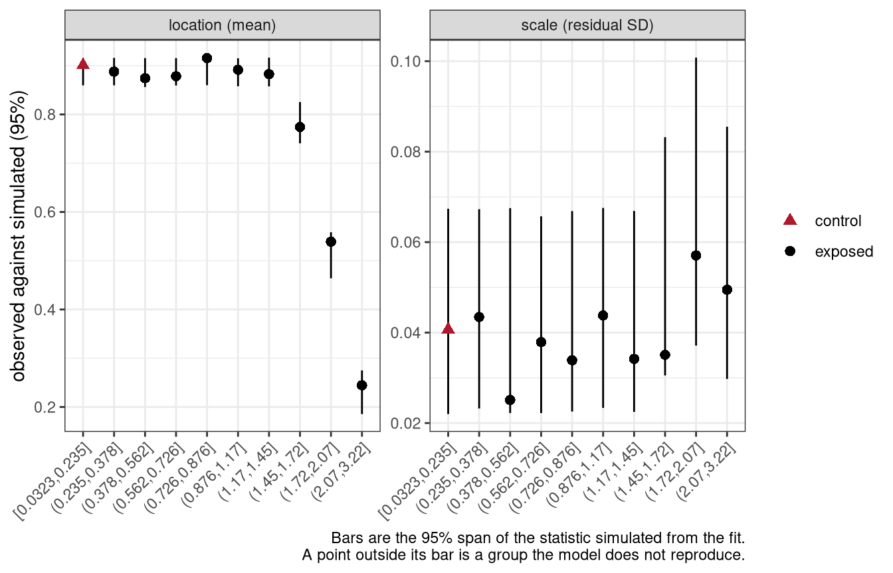

library(bayesnec)
data(nec_data)
head(nec_data) x y
1 1.0187462 0.8602703
2 0.8157475 0.9102426
3 0.3713305 0.8485031
4 0.4008323 0.9226047
5 1.2945451 0.8657107
6 1.3897943 0.9163264One concentration-response model in bayesnec, start to finish
bayesnec fits concentration-response curves to toxicity data and derives no-effect concentration (NEC), no-significant-effect concentration (NSEC, Fisher and Fox (2023)) and effect concentration (ECx) estimates from non-linear models fitted by Bayesian Hamiltonian Monte Carlo, via brms (Bürkner 2017; Bürkner 2018) and Stan. It is an extension of jagsNEC (Fisher et al. 2020).
This module fits one model to one dataset and works through everything that can be done with the result: checking that it converged, looking inside the fitted object, plotting it, and extracting toxicity estimates. Later modules cover the full model set, model averaging, the choice of statistical distribution, and priors.
If you have not yet installed R, a C++ compiler, CmdStan and bayesnec, work through the software setup first. Nothing in this module will run without them.
bayesnec supplies a small example dataset, nec_data, with two columns: x, the concentration, and y, the response.
library(bayesnec)
data(nec_data)
head(nec_data) x y
1 1.0187462 0.8602703
2 0.8157475 0.9102426
3 0.3713305 0.8485031
4 0.4008323 0.9226047
5 1.2945451 0.8657107
6 1.3897943 0.9163264The response here is a proportion bounded by zero and one, which matters for the statistical distribution used to model it. bayesnec will choose a distribution from the characteristics of the data unless told otherwise, and module 5 covers that choice in more detail.
Supply the response as it was measured. Do not convert it to percent inhibition, percent of control, or percent of the observed maximum before calling bnec().
Normalising to the control is conventional in ecotoxicology, usually as \(y^0_i = 1 - y_i / \bar{y}_{con}\), where \(\bar{y}_{con}\) is the mean of three to six control replicates. Ritz et al. (2026) measured what it does. Every observation is divided by the same random quantity, so the normalised values are correlated and the sampling variability of the divisor is discarded. Because the expected value of a reciprocal is not the reciprocal of an expected value, the inhibition trend is biased downwards and the effect concentrations read off it are biased upwards.
The size of that error, from their simulation of an ED10 with six control replicates: normalising gave a bias of 6.8% and a coefficient of variation of 26.4%, against 2.1% and 12.7% for the same quantity estimated from the raw response, and nominal 95% intervals covered at 90% rather than 95%. With a single control replicate the coverage of the normalised analysis fell to 57%.
Nothing is lost by not normalising. The concentration at which inhibition rises by \(x\) per cent is the concentration at which the response falls by \(x\) per cent, so the two analyses answer the same question. The second is what ecx() returns by default, as a decline relative to the fitted control rather than to an observed control mean, and because it is evaluated separately within every posterior draw the uncertainty about the control level propagates into the credible interval instead of being thrown away.
Dividing by the observed maximum instead of the control mean is worse, on three counts. An extreme order statistic is more variable and more biased than a mean of three to six values. The divisor then depends on every treatment rather than on the controls alone, so treated groups partly determine their own denominator. And it forces exactly one observation to exactly 1, which is outside the open interval a beta distribution is defined on, so bnec() has to shift it off the boundary.
bnec() looks for both practices and reports them. Dividing by the observed maximum leaves a maximum of exactly 1 attained by exactly one observation, and dividing by the control mean leaves the control observations averaging to exactly 1. The first check is suppressed where the response lies on a rational grid, because a genuine count-derived proportion such as 19 of 20 surviving routinely produces a single observation at 1 and is not evidence of anything.
Where a divisor is unavoidable, as it is for a response above 1 that has to be modelled with a beta distribution, it must be a constant fixed in advance of the analysis: a physiological or design ceiling, or a value from accumulated historical controls. Ritz et al. (2026) are explicit that the problem is dividing by something random rather than dividing as such. An ECx is unaffected by the choice of a constant divisor, because it is a relative decline from the fitted top, and the same holds for any linear rescaling of the response (Weimer et al. 2012).
Many proportional responses need no divisor at all. The maximum quantum yield used in module 7 is a genuine physical proportion, as is a survival fraction or a bleached-area fraction, and these are modelled as they stand.
Dividing by the observed maximum is often done for a reason that has nothing to do with normalisation. A response on an arbitrary scale, such as a luminescence reading or a cell count, is divided to put it between 0 and 1 so that a beta distribution can be used, because the beta accommodates variability that changes with the mean and a Gaussian does not.
That reasoning identifies a real problem and answers it indirectly. The problem is that replicate variability at the high concentrations is not the same as at the control. The direct answer is to keep the response on its own scale, choose the family that suits it, and model the variability explicitly where it changes. Module 5 covers both halves: the choice of family, and the disp term for a dispersion that varies across the series.
Doing it that way keeps top, bot and nec in the units the experiment was measured in, avoids the bias Ritz et al. (2026) measured, and states the change in variability as something estimated from the data rather than absorbed by a transformation. It also avoids forcing an observation onto the boundary of the beta’s support, which division by a maximum does by construction.
A Bayesian model is fitted by drawing samples (which I will explain in more detail in Module 6), so running the same code twice gives slightly different numbers unless the random number generator is set to a known state.
Two generators are involved and both have to be fixed. bnec() searches for valid starting values in R before it calls Stan, and that search draws from R’s own generator, which set.seed() fixes. Stan then samples using a generator of its own, which the seed argument fixes. Setting one and not the other leaves the fit irreproducible, so every fit in this course sets both.
set.seed(333)
bnec_fit <- bnec(y ~ crf(x, model = "nec3param"), data = nec_data, seed = 333)The estimates below will not match yours to the last decimal place unless you use the same seed, the same number of chains and the same version of the package. They should match to within the width of the credible intervals, and if they do not, that is worth investigating rather than accepting.
bnec functionbnec is the working function of the package. It assembles the non-linear model formula, generates priors and initial values, and calls brms. It is designed for an R user who is comfortable with model-fitting syntax but is not a specialist in non-linear or Bayesian modelling.
Run ?bnec for the full argument list. Beyond the formula and the data, the arguments fall into four groups: the model or model set to fit (model); how toxicity estimates are computed from the fit (x_range, resolution, sig_val); how the response and predictor are identified when the formula alone is not enough (x_var, y_var, trials_var); and how priors are set (prior, prior_type).
Anything else is passed through to brms::brm() by ..., so the full brm argument list is available. Three brm arguments are worth knowing about because bayesnec sets them differently from brms. It generates its own family and prior values rather than using the brms defaults, and it raises the number of iterations from 2,000 to 10,000, with a correspondingly longer warm-up, because the non-linear models here often need it.
Compare the retained draws rather than iter, because the fraction discarded during warm-up is a choice each package makes for itself. bayesnec fits four chains at iter = 1e4 and sets warmup to floor(iter / 5) * 4, so it discards four fifths and retains 8,000 draws. brms discards half, so its own defaults of iter = 2000 over four chains retain 4,000. A number of iterations means nothing until the warm-up rule and the chain count are stated beside it, which matters here because two of the diagnostics in the next section are counts read against the retained draws.
Two arguments are the ones to reach for when a fit is marginal. Raise iter and warmup where the convergence diagnostic is borderline or the effective sample size is low. Pass control = list(adapt_delta = 0.99, max_treedepth = 12) where the sampler reports divergent transitions or reports hitting the maximum tree depth. Both increase the run time, and neither corrects a model that does not suit the data.
A bayesnec formula takes the form:
y ~ crf(x, model = "modelname")The left-hand side is the response, exactly as in brms. The right-hand side uses crf(), a function specific to bayesnec, which stands for concentration-response function. It takes the predictor and the name of the model to fit, and it accepts a transformation of the predictor, such as crf(log(x), ...).
Term names must match the columns of the data frame exactly, as in any R formula.
The available models are:
models()$all [1] "nec3param" "nec4param" "nechorme" "nechorme4"
[5] "necsigm" "neclin" "neclinhorme" "nechormepwr"
[9] "nechorme4pwr" "nechormepwr01" "ecxlin" "ecxexp"
[13] "ecxsigm" "ecx4param" "ecxwb1" "ecxwb2"
[17] "ecxwb1p3" "ecxwb2p3" "ecxll5" "ecxll4"
[21] "ecxll3" "ecxhormebc4" "ecxhormebc5" These fall into named groups, which is how a set of models is requested rather than a single one:
names(models())[1] "nec" "ecx" "all" "bot_free" "zero_bounded"
[6] "decline" "hormesis" Module 3 describes what each model is and which toxicity estimates can be derived from it. Module 4 covers fitting a set of models rather than a single model.
The predictor enters the equations directly, so the scale it is supplied on changes the curve being fitted rather than only the axis it is drawn against. bnec() takes the concentration exactly as it is given and does not make this decision for you.
Settle it before fitting anything, because it generally matters more than the choice of equation. On one algal dataset, fitting nec4param on log(dose) rather than on the raw dose axis reduced the largest departure of the fitted mean from the observed mean from 0.2115 to 0.0676, on a response spanning about 0.7, while five different equations fitted on the log axis all landed within 1.2 elpd_loo of one another.
Concentration-response experiments are usually laid out as a dilution series, in which each concentration is a fixed multiple of the one below it. On a linear axis such a design crushes the low concentrations together and spreads the high ones out, so the equation spends its flexibility at the top of the range, where the response is often already flat.
Read the spacing of the design rather than the shape of the response. Concentrations that are near evenly spaced after a logarithmic transformation were laid out on a log scale, and are usually best modelled there:
spacing_cv <- function(x) sd(diff(sort(x))) / mean(diff(sort(x)))
# a three-fold dilution series
conc <- c(0.01, 0.3, 1, 3, 10, 30, 100, 300)
round(c(linear = spacing_cv(conc), log = spacing_cv(log(conc))), 2)linear log
1.72 0.58 The coefficient of variation of the gaps is much smaller on the log scale, which is the signature of a series designed on that scale.
A transformation is written directly inside crf(), as crf(log(x), model = "nec4param"). Three consequences follow.
The transformation is evaluated before bayesnec inspects the predictor, so a control recorded as 0 arrives at the data check as log(0) and the fit stops, reporting a predictor that is not finite. bayesnec does not correct a zero on the predictor axis: a concentration of zero is an ordinary control, and no response distribution constrains the values a predictor may take. Choose the offset yourself and add it to the data first, as log(x + 1) or a smaller constant suited to the series.
Toxicity estimates are then returned on the transformed scale, so nec(), ecx() and nsec() need back-transforming through their xform argument, which autoplot() also takes:
ecx(fit, xform = function(x) exp(x) - 1)
autoplot(fit, xform = function(x) exp(x) - 1)A value reported on the fitted scale reads as a concentration and is not one. Reporting a logged value as a concentration understates the threshold by a factor of e for every unit on the logged scale, and only a negative logarithm announces the error. State the scale alongside any value you report.
nec_data is left on the linear scale throughout this course, and deliberately so. It is simulated as 100 random draws rather than as a designed series, and the true curve is defined as a function of linear x, so logging it would distort the generating scale rather than reveal it. The difference between this example and a real dilution series is the design rather than the package.
bnecSupplying a formula and a data frame is the minimum reqired to fit a bayesnec model; everything else is supplied by a default setting. You should always understand what these default settings are and if they are adequate for your data, but for this example they are.
set.seed(333)
bnec_fit <- bnec(y ~ crf(x, model = "nec3param"), data = nec_data, seed = 333)
save(bnec_fit, file = "fits/m2_bnec_fit.RData")load("fits/m2_bnec_fit.RData")The first thing that happens is compilation. Stan models are written in the Stan language, translated to C++ and compiled to a shared object, which R then loads and runs. This is why the first fit of a session is slower than later ones, and why a compiler is needed at all.
Sampling follows. How long the whole thing takes depends on the machine, the number of chains and the number of iterations. The fit above took a little over two minutes on four cores.
A model is fitted by running several chains, and those chains are independent of one another until the results are combined. Run in series they wait their turn and the fit takes as long as all of them added together; run in parallel they run at the same time on different processor cores and the fit takes about as long as the slowest one. Setting mc.cores is what allows the second, so use at least as many cores as you have chains:
options(mc.cores = 4)More cores than chains gives no benefit here, because there is nothing else to run at the same time. There is a second level of parallelism once a set of models is being fitted rather than one — the models can run alongside each other as well as the chains within them — and module 4 covers it.
When the fit completes, bayesnec reports which model was fitted and which statistical distribution was used. Here it is a nec3param model with a beta distribution.
Warnings may also appear. The two above concern the Pareto k diagnostic and p_waic, both of which relate to the leave-one-out cross-validation used to compute model weights. Weights are irrelevant when a single model has been fitted, and module 4 returns to them when they are not.
A fitted model takes minutes of compute to produce and seconds to store, so save it as soon as it finishes.
saveRDS(bnec_fit, "nec3param_fit.rds")
bnec_fit <- readRDS("nec3param_fit.rds")Be deliberate about where. This is one of the smallest fits in the course and the object is 1.3 Mb, because it stores every posterior draw for every parameter. A model-averaged set of all 23 models is very much larger, and a fit to real data with a grouping variable larger again. A folder synchronised by OneDrive or a similar service is a poor choice: the upload is slow, and on some configurations it interferes with writing the file at all.
Every module in this course follows the same three steps, and they are the steps a real analysis follows rather than a convenience invented for teaching.
The model is fitted, and the fit is saved:
set.seed(333)
bnec_fit <- bnec(y ~ crf(x, model = "nec3param"), data = nec_data, seed = 333)
save(bnec_fit, file = "fits/m2_bnec_fit.RData")That chunk is shown rather than run. Then the saved object is loaded, and it is the loading that runs when you work through the page:
load("fits/m2_bnec_fit.RData")load() restores the object under the name it was saved with, so bnec_fit exists from that point on exactly as though it had just been fitted.
This is worth adopting in your own work for the reason the paragraph above gives: sampling is what takes the minutes, and it never needs repeating. Fit in one script, save, and load in the script that plots, summarises and extracts estimates. A fit that is never saved is refitted every time a figure changes.
The workshop distributes these saved objects, so the modules load in seconds rather than sampling for minutes. The software setup covers retrieving them. Fitting the models yourself works and is slower, which is worth doing at least once to see how long it takes.
summary(bnec_fit)Loading required namespace: rstanObject of class bayesnecfit containing the nec3param model
Family: beta
Links: mu = identity
Formula: y ~ top * exp(-exp(beta) * (x - nec) * step(x - nec))
top ~ 1
beta ~ 1
nec ~ 1
Data: data (Number of observations: 100)
Draws: 4 chains, each with iter = 10000; warmup = 8000; thin = 1;
total post-warmup draws = 8000
Regression Coefficients:
Estimate Est.Error l-95% CI u-95% CI Rhat Bulk_ESS Tail_ESS
top 0.89 0.01 0.88 0.90 1.00 7194 5302
beta 0.54 0.06 0.43 0.65 1.00 5471 5257
nec 1.54 0.02 1.50 1.57 1.00 5408 4826
Further Distributional Parameters:
Estimate Est.Error l-95% CI u-95% CI Rhat Bulk_ESS Tail_ESS
phi 51.89 7.48 38.30 68.06 1.00 6057 4992
Draws were sampled using sample(hmc). For each parameter, Bulk_ESS
and Tail_ESS are effective sample size measures, and Rhat is the potential
scale reduction factor on split chains (at convergence, Rhat = 1).
Estimate Q2.5 Q97.5
NEC 1.54 1.50 1.57
Bayesian R2 estimates:
Estimate Est.Error Q2.5 Q97.5
R2 0.96 0.00 0.96 0.97There is a lot here, so we’ll go through each part.
The object is of class bayesnecfit, containing the nec3param model. bayesnec returns a bayesnecfit when one model is fitted, and a bayesmanecfit when a set is fitted.
The family is the beta distribution with an identity link. This will only mean something to those familiar with generalised linear models, as they are usually parameterised for linear modelling. This is deliberate and it is not the brms default, which for a beta response is the logit. bayesnec uses the identity link for every family, so that the top, bot and nec parameters stay on the scale of the response and remain directly interpretable. It matters if you ever compare a bayesnec fit against a brm model you have written yourself: unless you pass the link explicitly, the two are different models.
The brms formula that was fitted is printed. For nec3param it is a constant top until the concentration reaches nec, followed by exponential decay, with the switch implemented by step(). Module 3 sets out the equations.
Rhat is a convergence diagnostic and should be close to 1. All three parameters here are at 1.00, and the effective sample sizes are in the thousands, both of which indicate the sampler explored the posterior properly.
The NEC estimate is given below the coefficients, as a median with a 95% credible interval, and the Bayesian R² gives an indication of fit. The value here is high, as you would expect of a simulated example where the curve is well-determined; real data rarely look this tidy.
bnec() reports what it did as it goes, through messages. A knitted document or a call wrapped in suppressMessages() keeps none of them, so the same information is stored on the fitted object and read back with bnec_record().
rec <- bnec_record(bnec_fit)
names(rec)[1] "requested" "attempted" "excluded" "substitutions"requested is the model or set you asked for, and it is divided exactly between attempted and excluded. An equation is excluded before fitting where it is invalid for the family or the predictor, and excluded gives the reason for each. An equation that was attempted and then failed to fit stays in attempted, and module 4 covers how to find it.
rec$excluded[1] model reason
<0 rows> (or 0-length row.names)Nothing was excluded here, because one model was requested and it is valid for a beta response.
substitutions records any value bayesnec altered because the family cannot represent it as recorded. A beta distribution is defined on the open interval between 0 and 1, so a response of exactly 0 or exactly 1 lies outside it. bayesnec replaces a zero with one tenth of the smallest non-zero value, and reduces a one by 0.001.
rec$substitutionsNULLNULL means the response was fitted as recorded. Where it is not NULL, the analysis was run on the substituted values and a methods section has to say so. Module 5 returns to this, because a series with several concentrations sitting at a boundary is being modelled through the substitution rather than as measured.
brms offers a range of diagnostics, and the brms documentation covers them far better than this course can. Extract the underlying model with pull_brmsfit():
brm_fit <- pull_brmsfit(bnec_fit)Plotting it gives the marginal posterior of each parameter beside its trace:
plot(brm_fit)
Read the traces from left to right. Four chains that overlap, with no drift and no sustained excursion, indicate the chains have converged on the same distribution. Chains that separate into bands, or wander, indicate they have not, and the estimates should not be used.
Reading plots does not scale beyond a handful of parameters, and it will not scale at all to the model sets of module 4. check_sampling() puts the same judgement on three numbers:
check_sampling(bnec_fit) model max_rhat min_ess min_ess_ratio n_divergent failed
1 nec3param 1.000764 3702.317 0.4627896 0 FALSEEach is compared against a cutoff, and failed is TRUE where any of the three is missed.
max_rhat is the largest R-hat over the parameters, and the cutoff is 1.01 following Vehtari et al. (2021). R-hat compares the variation within each chain against the variation between chains, so a value near 1 says the chains are describing the same distribution.
min_ess is the smallest effective sample size, and the cutoff is 400. Draws from a Markov chain are correlated, so 8,000 of them hold less information than 8,000 independent draws would; the effective sample size is how many independent draws they are worth. The floor of 400 is an absolute one, below which the R-hat and effective sample size estimates are themselves unreliable, and it corresponds to 100 draws per chain at the four chains bnec() fits. Decide on min_ess and read min_ess_ratio beside it: the ratio separates a model that cleared 400 because a great many draws were taken from one that cleared it efficiently.
n_divergent is the number of divergent transitions, and the cutoff is 10. A divergent transition is recorded when the sampler’s path through parameter space goes numerically unstable, which happens where the posterior has curvature too sharp for the step size chosen during warm-up. This one is a bayesnec convention rather than a published recommendation: Stan’s own guidance is that any divergence means the sampler failed to explore the posterior, and the allowance of ten reflects that these non-linear models commonly produce a few near a parameter boundary.
The two counts are absolute, so the number of retained draws changes what each one demands, and it changes them in opposite directions. A longer run makes the effective sample size cutoff easier to clear and the divergence cutoff harder, because at an unchanged divergence rate more draws produce more divergences. A screen result is therefore a property of the settings as much as of the model, and the settings belong in the write-up beside it. All three cutoffs are arguments to check_sampling() and can be changed, which is a further reason to report the values used.
Everything above asks whether the sampler explored the posterior. None of it asks whether the fitted model reproduces the data, and those are different questions: a model can converge perfectly onto a description of the data that is wrong.
The distinction matters most for the NSEC, which module 3 introduces. nsec() sets its reference at a quantile of the posterior of the control mean, and the width of that posterior is the variability the fit estimated at the control. A model simulating more variability at the control than the data show places that reference lower, so the curve crosses it further along and the reported concentration is higher and less protective. A model simulating less variability returns a lower one. The direction is not known in advance, and no convergence diagnostic reveals it.
One number for the whole fit will not detect this. Every family with a free dispersion parameter estimates that parameter from the same residuals such a number would summarise, so the parameter absorbs the discrepancy: the fit reports close agreement overall while simulating the wrong spread at the concentrations that determine the estimate. The check is therefore made within groups of the predictor, which is what check_fit() does.
cf <- check_fit(bnec_fit)Warning: The predictor has unreplicated values, so it has been cut into 10 bins
to give check_fit something to group by. A bin is not a design point: pass
`group` explicitly if the binning is not what you want, and treat any single
row as indicative.cf group n obs_mean sim_mean mean_ratio ppp_mean obs_sd sim_sd
1 [0.0323,0.235] 10 0.901 0.890 1.013 0.239 0.041 0.041
2 (0.235,0.378] 10 0.888 0.889 0.998 0.545 0.043 0.041
3 (0.378,0.562] 10 0.874 0.889 0.983 0.845 0.025 0.041
4 (0.562,0.726] 10 0.878 0.890 0.987 0.779 0.038 0.040
5 (0.726,0.876] 10 0.916 0.890 1.028 0.027 0.034 0.041
6 (0.876,1.17] 10 0.892 0.889 1.003 0.422 0.044 0.041
7 (1.17,1.45] 10 0.883 0.890 0.992 0.691 0.034 0.041
8 (1.45,1.72] 10 0.774 0.787 0.984 0.716 0.035 0.053
9 (1.72,2.07] 10 0.539 0.509 1.059 0.111 0.057 0.066
10 (2.07,3.22] 10 0.245 0.231 1.059 0.257 0.049 0.053
sd_ratio ppp_sd control
1 0.996 0.504 TRUE
2 1.060 0.423 FALSE
3 0.609 0.945 FALSE
4 0.944 0.580 FALSE
5 0.837 0.734 FALSE
6 1.062 0.398 FALSE
7 0.835 0.741 FALSE
8 0.663 0.933 FALSE
9 0.870 0.700 FALSE
10 0.934 0.600 FALSE
One or more groups show a posterior predictive p-value beyond
[0.05, 0.95]. See ?check_fit.The predictor in nec_data is continuous, with a different value for every observation, so there are no repeated concentrations to group by and check_fit() cuts the range into bins and says so. A bin is not a design point. On a real dilution series the groups are the tested concentrations and no binning happens.
Each row compares a statistic computed from the observations in that group against the same statistic computed from data simulated by the fitted model. mean_ratio and sd_ratio are the observed values divided by the simulated ones. ppp_mean and ppp_sd are posterior predictive p-values, each the proportion of simulated datasets in which the simulated statistic was at least as large as the observed one, so a value near 0.5 says the observed statistic sits in the middle of what the model produces and a value near 0 or 1 says it sits in a tail.
Read the p-values rather than the ratios, because a ratio says nothing about how well determined it is. The control column flags the lowest value of the predictor, which is the group both nsec() and ecx() read their reference from, so that row is the one to look at first.
For this fit the control row agrees closely: a sd_ratio of 0.996 and a ppp_sd of 0.50, meaning the observed spread at the control is what the model produces. The assumption the NSEC depends on most is supported at the concentration where it matters. Across the ten bins the means are reproduced throughout, with mean_ratio between 0.98 and 1.06, and one bin returns a ppp_mean of 0.03, which is what triggers the message. Ten observations is few for a group mean, and the departure sits inside the 95% span in the plot below.
plot(cf)
Each panel shows the observed statistic against the 95% span of what the model simulates, with location and scale drawn separately because they fail independently: a model can reproduce every group’s mean while simulating far too much spread. A point outside its bar is a group the model does not reproduce. Every posterior predictive p-value in the table above lies inside 0.025 to 0.975, so no point falls outside its bar in either panel, although the bin flagged by the message sits close to the edge of one.
The message and the bars use different criteria, so they can disagree. The message flags a p-value outside 0.05 to 0.95 and the bars are the 95% span, which is 0.025 to 0.975. A group can fall beyond the first and inside the second. Read the message as a prompt to look at that group rather than as a verdict on the fit.
Module 4 applies both of these to a set of models rather than to one, and module 7 shows what they contribute to a written analysis.
A bayesnecfit is a list holding the brms fit and a set of derived quantities.
names(bnec_fit) [1] "fit" "model" "init" "bayesnecformula"
[5] "pred_vals" "top" "beta" "ne"
[9] "f" "bot" "d" "slope"
[13] "ec50" "dispersion" "predicted_y" "residuals"
[17] "ne_posterior" "ne_type" pred_vals holds fitted values across the range of the predictor, which is what the plotting methods use and what you would use for a custom figure:
head(bnec_fit$pred_vals$data) x Estimate Q2.5 Q97.5
1 0.03234801 0.8890196 0.8788117 0.8984557
2 0.03553938 0.8890196 0.8788117 0.8984557
3 0.03873074 0.8890196 0.8788117 0.8984557
4 0.04192210 0.8890196 0.8788117 0.8984557
5 0.04511347 0.8890196 0.8788117 0.8984557
6 0.04830483 0.8890196 0.8788117 0.8984557Every fitted model holds a posterior for the no-effect estimate, in ne_posterior, with ne_type recording what kind of estimate it is. For models in the nec group this is the posterior of the nec parameter itself. For models in the ecx group, which have no threshold parameter, it is the posterior of the NSEC (Fisher and Fox 2023). Module 3 explains why those are different things.
hist(bnec_fit$ne_posterior,
main = "", xlab = "No-effect concentration", col = "grey80", border = "white")
plot() extends the base method and autoplot() extends the ggplot2 method. Both take arguments controlling what is drawn; see ?autoplot.bayesnecfit.
autoplot(bnec_fit) +
ggplot2::xlab("Concentration")Ignoring unknown labels:
• fill : "NA"
• colour : "NA"
The result is a ggplot object, so it composes with + in the usual way, and most ggplot2 functions will work on it.
By default the plot is annotated with the fitted no-effect estimate and its 95% credible interval, and labelled with the model that was fitted. The annotation is labelled NEC, because for a nec3param model the no-effect estimate is the NEC. We will discuss this in more detail in module 3, and how these are handled in model averaging in module 4.
Three functions extract estimates from a fitted model: ecx(), nec() and nsec().
ecx(bnec_fit) Q50 Q2.5 Q97.5
1.596696 1.564458 1.626689
attr(,"resolution")
[1] 200
attr(,"ecx_val")
[1] 10
attr(,"toxicity_estimate")
[1] "ecx"nec(bnec_fit) Q50 Q2.5 Q97.5
1.535280 1.498376 1.569226
attr(,"toxicity_estimate")
[1] "nec"nsec(bnec_fit) Q50 Q2.5 Q97.5
1.542506 1.501780 1.575577
attr(,"resolution")
[1] 200
attr(,"sig_val")
[1] 0.01
attr(,"toxicity_estimate")
[1] "nsec"
attr(,"ecnsec_relativeP")
50% 2.5% 97.5%
1.3607025 0.2149438 2.3966669 Each returns a median and a 95% probability interval by default, and each records how it was computed in the attributes of the returned object: ecx() returns an EC10 unless told otherwise, and nsec() uses a significance value of 0.01.
For this dataset the three estimates are close together, which happens when the curve declines sharply from a well-defined threshold. They are not interchangeable, and on other data they can differ. Module 3 covers what each of them measures and when each is appropriate.
summary() reports the toxicity estimate and the fit statistics, and for a single model the parameters are reachable through the underlying brmsfit. curve_params() returns them directly, and returns them for a model-averaged set as well, which nothing else does:
curve_params(bnec_fit) model wi dpar link parameter Estimate Q2.5 Q97.5
1 nec3param 1 mu identity top 0.8890196 0.8788117 0.8984557
2 nec3param 1 mu identity beta 0.5423672 0.4261439 0.6548448
3 nec3param 1 mu identity nec 1.5352804 1.4983762 1.5692257These are the quantities the toxicity estimates are read from, and they belong in a methods section beside them. top is the control level the curve is referenced to, beta is the decay rate, and nec is the threshold. A four-parameter equation would add bot, the lower asymptote.
xform applies to nec and ec50 and to no other parameter, because those two are measured on the predictor axis while top, bot and beta are levels of the response or shape parameters, on which a transformation of the predictor has no meaning.